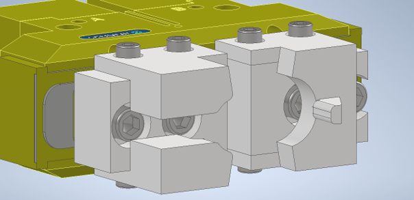
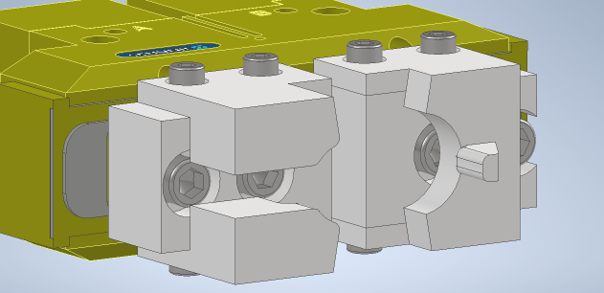
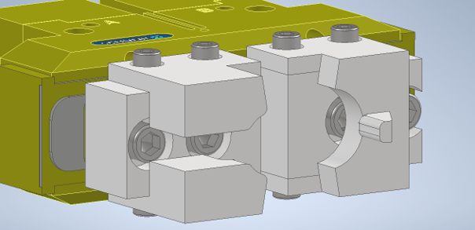

Megfogó

A megfogó a hengerfej mozgatásáért felel. A beérkező raklapról a rázóasztalra helyezi az alktrészt majd onnan a másik robot veszi föl és rakja a kalodákba. A megfogás a hengerfejen a két robot esetében két különböző helyen történik. Egyik alkalommal a kipufogó oldalról fogjuk meg, ami jelen esetben a műanyag insert-el fölszerelt megfogót jelenti. A műanyag nevesül danamid tömbökből van kimunkálva és az a célja a megfogón, hogy a károsodást az alumíniom hengerfej helyett elszenvedje. Gyorsan kopó alkatrészként egyszerűen cserélhető és gyártható kell legyen. A megfogónak kell kibírnia az alkjatrész mozgatása során ébredő terheléseket és emellett biztonságosan rögzítenie kell az alkatrészt a beütés folyamán is, ami 1000 N-os nagyságrendű ütést jelenthet. A beütő pont alatt többet lehet olvasni beütés munkafolyamatáról. A másik megfogó a "trombita" (olajtér) oldalon fogja meg az alkatrészt. Itt már nincs szükség az insertekre mivel ez a felület nem játszik szerepet a későbbi funkcionálás során.
| FŐOLDAL | Rázóasztal | Beutő állomás | Kaloda emelő |